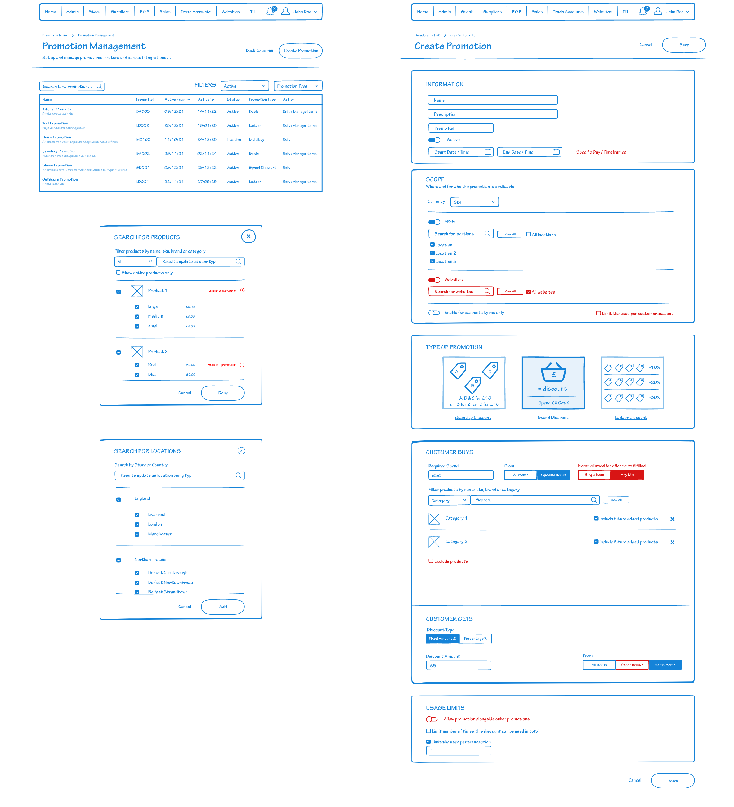

Improving Cybertill’s Integrated Offer Management System
Understanding Customer Pain Points
The existing offer management system required users to create “offer categories” and then navigate to another part of the system to set up rules and details. Customers frequently described this process as cumbersome and overly restrictive. Our goal was to simplify the workflow and make the system more intuitive and flexible for retailers.

Data-Driven Insights
Working with the data team, we analysed how customers used the current system, focusing on the number of items attached to offers. The data confirmed what we’d heard from customers—most offers were applied to small numbers of products, making the setup process inefficient. This insight informed the redesign, particularly around removing the need for specific categories in favour of a more flexible solution.

Competitor & Market Research
To ensure the new system was competitive, we analysed how other platforms like Vend, EPOS Now, Magento, and Shopify managed offers. This research helped us identify best practices and areas where Cybertill could differentiate itself. These insights shaped the wireframes and feature set for the updated system.

Redesigning the User Interface
The new design merged all offer setup information into a single screen, reducing complexity and improving usability. Many fields became dynamic, changing based on the type of promotion being created. A key feature was the introduction of the “offer bin,” which replaced offer categories. The bin allowed users to search for individual products, product styles, or standard categories and included options to exclude specific products easily. Plans were made to expand functionality further, including filters for attributes like brand and season.
Collaborative Iteration & Feedback
Wireframes and designs were presented to customers by the product team for feedback. Based on their input, I refined the interface, adopting Material Design principles to create a clean, modern aesthetic. This iterative process ensured that the final design addressed both customer needs and technical requirements.


Considering the Point of Sale (POS) System
The redesign also included updates to the till interface to support the new offer system. Although customer and internal demos highlighted areas for improvement, the POS system refresh was ultimately limited by technical constraints and project timelines. However, the groundwork was laid for future enhancements when resources allowed.